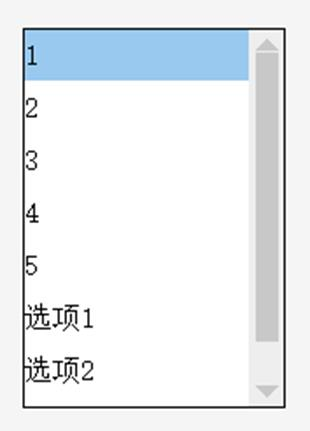

|
类型 |
控件操作指令 |
|
描述 |
强制修改列表控件的文本列表，具体应用例程参见动态列表。 注意：使用该指令须先开启“列表”控件的“动态项”属性。 |
|
语法 |
HMI_LISTTEXTS (winid, controlid, strList,[,mode] [,lineheight]]) winid：Hmi文件里面窗口编号 controlid：元件编号 strList：文本列表，以换行符隔开 mode：可选，修改模式，缺省0 0 - 覆盖方式，清空原来的列表项重新写入新的列表项 1 - 追加方式，在原来的列表项基础上末尾增加新的列表项，且滚动条自动跟随到追加位置 lineheight：可选，强制指定行高度，缺省-1不指定 -1 - 自动计算行高度，行高度将随列表项目数量变化 =0 - 使用当前行高度 >0 - 强制指定行高度，小于最小行高度时按最小行高度设置 最小行高度 = 字高 + 2*行间距 注意： 1. 字符串最大字符数限制2049。 2. 使用该指令修改的列表项，其列表编号是逐行递增的，不能指定编号，追加操作的列表项也是。 3. 非追加操作方式，列表控件的滚动条位置将会自动复位，追加操作方式可以选择保持滚动条在追加位置。 4. 列表控件对于动态列表项缓冲区有大小限制，最多256项，当加满256项时，每一项列表项文本不得超过12个字符。 |
|
适用控制器 |
支持RTHmi |
|
例子 |
dim strList(100) = "选项1\n选项2\n选项3" HMI_LISTTEXTS (10, 3, strList,1,30) '在原有的列表项基础上追加新的列表项，并指定行高度为30 显示结果如下：  |